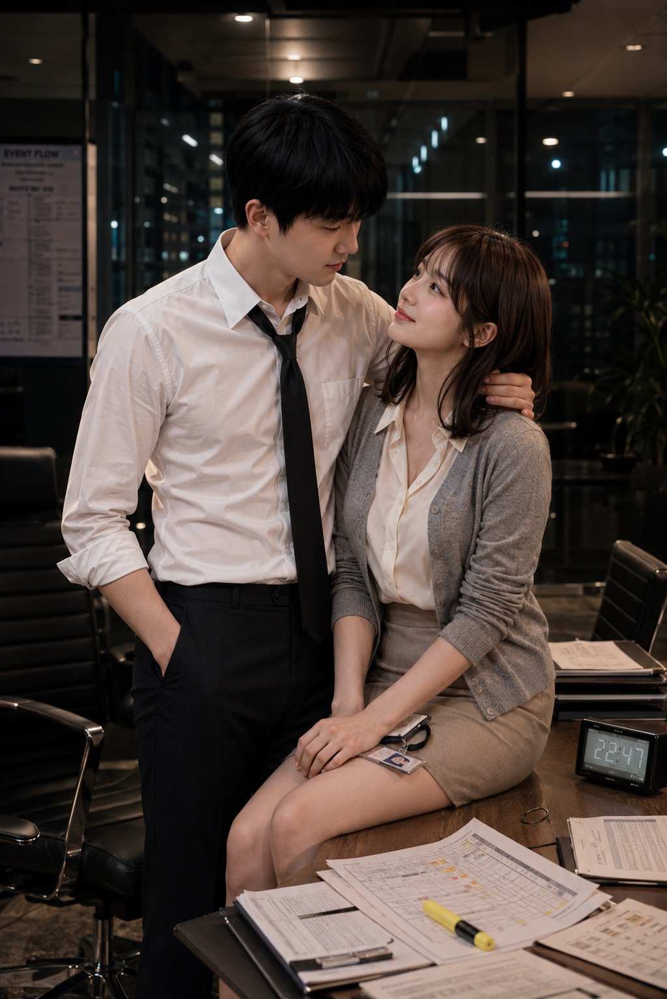

김시안"먼저 와 있었네."
본사 회의실 유리문 너머로 하린이 고개를 들었다. 늦은 저녁이 되도록 형광등만 남은 층에서 그녀는 행사 동선표와 재고표를 겹쳐 놓고 하나씩 표시를 지우고 있었고, 시안이 들어오자 잔뜩 웅크렸던 어깨가 눈에 띄게 풀렸다.
유하린"오빠가 늦을 것 같아서요. 이상한 칸들 먼저 정리해 두면... 오빠 덜 힘들까 봐."
시안은 대답 대신 하린 자리 옆으로 와서 종이부터 봤다. 체크는 군더더기 없이 정리돼 있었고, 틀린 숫자 옆에는 왜 바꿨는지 근거까지 적혀 있었다. 도와줬다는 티보다 자기가 맡은 사람처럼 남기려는 흔적이 더 강했다.
김시안"잘했네."
유하린"진짜요?"
김시안"응. 이 정도면 내가 다시 안 봐도 되겠는데."
그 한마디에 하린은 잠깐 말문이 막힌 듯 웃지도 못했다. 칭찬을 들은 기쁨보다, 믿고 넘겨도 된다는 말이 먼저 안으로 들어간 얼굴이었다.
유하린"저... 요즘 자꾸 그런 생각 들어요."
김시안"무슨 생각."
유하린"오빠가 힘든 날에 제가 제일 먼저 보여야 좋겠다고."
회의실 창밖으로는 다른 층 불빛만 성기게 떠 있었다. 하린은 자기 말에 스스로 놀랐는지 손끝으로 펜을 굴리다 멈췄다.
유하린"이상하죠. 원래는 그런 말 못 했는데."
김시안"이상하진 않아."
유하린"근데 요즘은 다른 사람들도 많고, 다들 저보다 오래됐고... 제가 급하게 욕심내는 것 같기도 해서."
시안은 하린 손에서 펜을 빼내 조용히 책상 위에 눕혔다. 불안해질 때마다 손끝부터 바빠지는 습관을 이미 알고 있었다.
김시안"하린아."
유하린"네."
김시안"오래됐다고 먼저 보이는 건 아니야."
하린의 눈동자가 크게 흔들렸다. 늘 남이 비운 칸을 메우는 사람처럼 보일까 겁내 왔고, 그래서 더 먼저 도착하고 더 먼저 챙기려 버텼다. 그런데 지금은 그 모든 조급함을 꿰뚫어 본 말이 너무 담백하게 떨어졌다.
김시안"네가 먼저 오면, 그건 네 자리로 남는 거고."
유하린"그렇게 말해 주면..."
하린은 숨을 고르려는 듯 입술을 다물었다가, 결국 웃는 대신 눈부터 젖었다.
유하린"저 진짜 이상하게 힘 빠져요."
시안은 그녀 의자 옆에 한쪽 무릎을 굽혀 앉았다. 고개를 피하지 못하게 눈높이를 맞추자 하린의 시선이 몇 번 흔들리다가 결국 다시 돌아왔다.
김시안"힘 빼. 여기서는 그래도 돼."
유하린"오빠는 자꾸 그렇게 말해요."
김시안"싫어?"
유하린"아니요."
짧은 대답과 함께 하린이 먼저 몸을 기울였다가 멈췄다. 망설임이 남아 있었지만 물러서고 싶어 하는 건 아니었다. 시안은 그녀 턱 끝을 손끝으로 가볍게 들어 올렸다.
김시안"계속 먼저 오고 싶어?"
유하린"네."
김시안"그럼 그렇게 해."
입술이 닿은 순간 하린은 숨을 삼키듯 작게 떨었다. 처음부터 매달리듯 깊게 들어오지 않고, 확인받은 말을 다시 믿어 보려는 사람처럼 조심스럽게 따라왔다. 시안이 한 손으로 의자 등받이를 짚고 다른 손으로 그녀 허리를 안정적으로 감싸자, 하린은 그제야 힘을 조금 빼고 눈을 감았다.
키스가 길어질수록 하린의 손은 시안 셔츠 소매를 아주 약하게 쥐었다 놓기를 반복했다. 불안해서 붙드는 힘이 아니라, 이 순간이 자기 몫으로 남는지 확인하려는 작은 버릇 같았다. 시안이 천천히 입술을 떼자 하린은 한동안 눈을 뜨지 못했다가 뒤늦게 작게 웃었다.
유하린"이러면... 저 진짜 더 욕심나는데."
김시안"원래 있었잖아."
유하린"티 났어요?"
김시안"많이."
하린은 얼굴이 붉어진 채도 이번엔 피하지 않았다. 대신 의자에 앉은 자세 그대로 시안 쪽으로 조금 더 돌았다.

하린은 입술 끝이 아직 뜨거운 채 손등으로 제 입가를 한 번 짚었다. 민망해서라기보다 정말 있었던 일인지 다시 확인하는 사람처럼.
유하린"오빠."
김시안"응."
유하린"저, 이제 먼저 가 있는 거 진짜 더 잘할 수 있을 것 같아요."
김시안"그건 믿어."
유하린"그러면 다음에는..."
하린이 잠깐 웃다가 말을 삼켰다.
유하린"다음에는 오빠가 저 제일 먼저 찾았으면 좋겠어요."
시안은 대답 대신 그녀 이마를 손끝으로 가볍게 쓸어 넘겼다. 하린은 그 작은 동작만으로도 다시 얼굴이 풀렸다.
김시안"가자. 너무 늦었다."
유하린"네. 그래도 오늘은 좀 안 무서울 것 같아요."
둘이 회의실 불을 끄고 나설 때, 하린은 아까보다 훨씬 곧은 걸음으로 앞서 걸었다. 먼저 와 있던 시간이 진짜 자기 자리로 남는다는 걸 배운 사람의 뒷모습이었다.